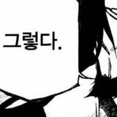
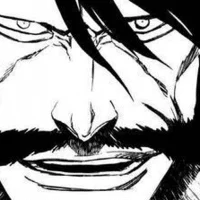
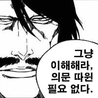

이걸 어케이긴거지
이걸 어케이긴거지
쿠보도 만들고 보니 존나 개노답이라 대충 치트키로 잡은 개초딩 보스
유하바하를 이길수 있었던것도 모두 츠키시마씨 덕분이잖아?
이런 능력은 모든 운명에서 내가 패배한다, 이게 무난한 해결법인데
갑자기 능력 안씀, 갑자기 능력 봉인되는거 당함 이런식으로 해결한게 쿠보식 스토리의 한계... 클리셰보다 못하다
우류가 날린 정지의 은화살을 미리 못본다는게 진짜 말이 안됨
그 은 자체가 유하바하의 능력이 안통해서가 아닐까 ㅋㅋㅋ
우류는 유하바하의 미래보는 능력에서 벗어난 존재라는 의견이 있던데
좆까고 그딴걸 언제 설명해줬어 ㅅㅂㅋㅋ
아이젠도 무월 뚝딱으로 잡아 유하바하도 정지의은 딸깍으로 잡아 걍 스토리짜는 재능은 없음
그림이랑 순간 뽕맛은 뒤지게 잘해서 1억부 클럽이고
ㄴㄴ 그 퀸시들의 뭐시긴가 모아서 만든 은이라는 재료로 만든 화살을 유하바하가 못본다는 설정아니냐고
유하바하 능력 잠깐 삭제시키니까 못보지 않을까
설명 자체는 했음 ㅋㅋㅋ 블리치식 은유 + 만화책 1장 분량이라서 그렇지 ㅋㅋㅋ
애니에서 충분히 수습할 수 있었는데 그것마저 못한 게 진짜 개씨발임
이새끼를 어떻게 이기냐고 ㅋㅋ 그냥 신인데
쿠보 죽어 그냥
쿠보가 이래서 스토리텔링을 못한다는 소리가 나오는 거임
'현재의 세상을 파괴하려는 인격신에 대한 이야기'라고 한다면 흥미로운데
"디 올마이티~ 나는 미래를 내다보니라~ 엣헴~ 공격 안 통하니라~ 카이저 게장~" 개초딩 노트
애초에 유하바하가 패배한 것도 유하바하 스스로 신의 아들이라 말하고 있을 뿐이지
유하바하의 출생은 아무도 모르니 신의 아들을 자칭하는 그저 인간일지도 모름
어쩌면 신의 아들은 모든 경계를 허물고 영왕의 자격이 있는 이치고고
이치고를 부정하며 신의 아들이라 자칭하지만
신이 만든 세상과 적대하며 거스르는 유하바하야말로 적그리스도 일지도
혼돈이 의지를 가지고 모든 우연성에서 세계를 창조했을 때
모든 운명이 결정되었고 그와 동시에 신의 의지 아래에 있는 유하바하의 패배도 결정되었던 거라
차라리 이 부분을 부각시키면서 신의 의지에서 벗어나지 못하는 유하바하를 보여주는 것도 괜찮았을 거 같음
그런데 쿠보 병신이 지만 설정 알고 설정딸 치니까 독자는 속 터져 죽겠네 시발놈
근데 0.1초 능력 봉인시켜서 죽여버림
유하바하의 디 올마이티는 우류만 인지 못 함. 왜? 몰루. 설명이 없고 아무튼 그렇대.
애니에선 유하바하가 디 올마이티를 쓰면 유하바하의 눈은 미래를 보고 있으니까 눈알 한 번 움직이지 않고 상대와 싸우지만, 우류와 싸울 땐 눈알이 움직여서 직접 우류가 어디에서 공격하는지 보고 막는 묘사가 추가됨. 디 올마이티엔 우류가 보이지 않는다는 걸 확실시 함.
이치고에게 썰린 뒤 다시 부활한 순간에 우류가 유하바하를 고자로 만드는 정지의 은이란 걸 썼는데 그걸 볼 수 없어 맞아버렸고 그대로 패배.
원래 아만보라는게 보이면 더 재밌어지기 마련인데
블리치 만큼 맛없는 아만보 만화는 진짜 살면서 처음봄
난 스포츠 별로 안좋아하지만 스포츠 만화에서 작가가 설명하지 않은 룰에 의거한 인물들의 심리싸움 같은거
누가 설명해주면 진짜 뒤지게 재밌던데 블리치는 설명하면 시발 이렇게까지 억지로 끼워맞추려 하는구나 하고 좆같음
그 뭔 쇼츠에서 봤는데 영왕 눈이 4개인데 유하바하는 3개만있고 나머지 하나가 우류한테 있어서 우류만 감지 못한다 뭐 그런거 있었는데 꽤 그럴싸 했음
그거 쿠보가 직접 부정함. 정확히는 애니 연출에 대해 해설했는데,
눈깔 붉어진 거 > 블루트 베네
팔에 눈깔 모양 블루트 생긴 거 > 유하바하 눈을 의도했다 함
아 물론 왜 우류만 디 올마이티에 영향을 안 받는지는 말해주지 않았음.
근데 네 말대로면 올마쓴 하쉬발트랑 싸울 떄 그런 전개가 나올수가 없음 ㅋㅋ 그냥 쿠보 좆대로임
히로익 에이지에서 시간도약하는 녀석이 벨크로스를 이기는 미래를 찾을수 없어서 GG친걸 생각하면 유하바하의 능력도 자기능력 한도내에서만 가능할것 같은데??

이러니까 일본에서 3대 만화에 못드는거구나 ㄹㅇ 케디 원툴이네


패배사유: 하씨 이거 개꿈이네 하고 지가 죽는걸 넘김
잇카쿠는 언제 파워업해주냐고

이거보니 스타레일 폴카 카카몬드 생각나네 이년도 자기 구역에서는 가능성이 0.000001이라도 있으면 그걸 현실로 바꾸던데 유하바하 보고 만들었나 ㅋㅋㅋㅋ
원작에서는 그저 개초딩 능력을 나열할뿐인 설명에 뒷통수 맞아도 응 안파하는 연출로 일관해서 재미가 없는데. 이 팬만화 연출이 원작보다 더 낫다
...우주가 망했는데 이제 뭐함...?
우주가 존재하지만 투명 드래곤이 없는 미래를 찾아 들어가면 되지
에미는 없었다. 애비만 둘뿐...
이상하게 천년혈전 편부턴 능배물에 꽂혔는지 ㅈ사기 능력 나열하는 전개로만 갔음 아이젠 경화수월은 그거 걍 아이젠빨이잖아?로 보일 정도로
만화에서 그림보다 글이ㅡ더 많아지면 ㅈ된거라 보면 됨
저정도면 원작자 대입수준아님?
니가 이기는거 안그릴건데 어쩔 내가 이기는걸로 그릴거야 ㅋㅋ
하시발트가 보여준 하시발꿈으로 생각해서 패배
이런 놈을 어떻게 이긴거냐...
너무 먼치킨이라 노잼이었음
작중 유하바하랑 싸우던 시점 만해이치고가 다른 등장인물 다 합쳐도 반은 죽이겠다
사실 이새끼 존재 자체가 천년혈전의 오점같은거라
아무리 스토리 개선했다 해도 이새끼가 계속 있으면 스토리가 망가질수밖에 없음.
진짜 이치고가 혈통이 존나게 좋아서 이겼구나를 보여준 보스
초딩 애들이 캐릭터 과몰입해서 말싸움할 때 딱 저럼
쿠보 ㅈ대로 전개에
팬들이 억지로 계속 개연성을 붙이는거
같음
유튜브 보면 유독 그런 쇼츠 많음
'사실은 왜그랬을까?' 이러면서
엄청 끼워맞추는데
그냥 블리치는 그런 치밀한 만화 아니고
간지나는 장면 만들고 어떻게든 이어 붙이는
만화임
스토리를 먼저 고려하는 만화가 아닌거같음
나는 모든 가능성의 미래를 보고 개변할수있다!
이치고가 칼 고치고 오는 미래 못봄
정지의 은 쳐맞는 미래 못봄
그냥 다 못봄 ㅇㅇㅋ
근데 평범한 개미 1마리가 인간을 이길 수 없듯이 애초에 이길 수 있는 가능성 자체가 0이면 못 이겨야 정상 아닌가
좆대로좆대로 열매네